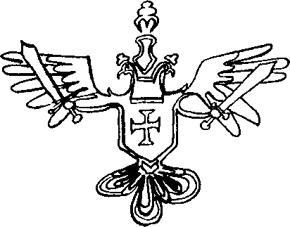

“Doğu’nun ilimleriyle Batı’nın kurgusunun ilginç bir sentezi... llimkurgunun ilk ve en şaşırtın örneği. Türkiye’nin laik demokrasisiyle bütün İslam âlemine örnek olabileceğinin kanıtı.”
Harry Eagletown, TLS (Time Literary Superstition)
“Geniş Duvduvani Efendi külliyatına yaslanan bu tarihsel metin, bir tarihçinin, tarihin ve romanın içinden, romancıların sözde edebi iddialarına verdiği bir cevap niteliğinde..."
Reyhan Taammül
DAM (Duvduvani Araştırmaları Merkezi) Müdiresi
“Yazar imgesini sarsan bir metin bu. Dikenini unutturmadan gülü öven... Güldüren, neredeyse recursive bir yapıyla kendini klasik romanın sınırları dışında tutan."
Osman Kaçak, Birgül Dergisi
“Sağ olsunlar, kitapta benim de olduğumu söyledi Gurman mecmuasındaki arkadaşlar. Okudum, aradım taradım ama bulamadım. Ben bile bulamadıysam halk nasıl anlasın efendim?"
Hırsver Yûceç, Alamet-i Ati
“Küresel iklim değişikliğine pek az yer verilmiş olması, Kitab-ı Duvduvani’nin en büyük eksikliği olarak hemen göze çarpıyor.”
Omar Ç. Marda
Kâinatın Sergüzeştleri’nden
“Geçenlerde genç bir yazarımızın, Hakan Erdem’in Kitab-ı Duvduvani adında post-modem ve uçuk kaçık bir romanı yayınlandı... Erdem orada ‘paralel bir evren’ kurmuş, Osmanlı tarihini yeniden yazmış, Birinci Berke falan gibi padişahlardan sözediyor... Sultan Palamut, Sultan Abüziddin falan da olabilirdi hani!..."
Engin Ardıç, Star, 27.05.2004
“Postmodern edebiyatın kayıp gizemli kitap ya da metinler arasılık gibi olmazsa olmazlarının yanı sıra, türün sıklıkla tekrarlanan diğer ayırdedici özellikleri de kullanılmış Kitab-ı Duvduvani’de; mesela, metnin yazılış öyküsünü metnin kendisi yapma, yazarı anonimleştirme, anlatıcıyı romana katma, polisiye bir hikâyecik ve fantastik unsurlar eksik bırakılmamış.”
A. Ömer Türkeş, Radikal Kitap, 21.05.2004
“Kitab-ı Duvduvani'de post modem edebiyatın ‘olmazsa olmaz’ kalıplarının parodisi yapılıyor. Örneğin çoğu tarihsel romanda tekrarlanan ‘kayıp kitap’ teması, hicivle işleniyor. Metnin yazılış serüvenini, romanın kendisi haline getirme yöntemi de hicivden nasibini alıyor.”
Ayşegül Yılmazer, Aydınlık, 6.06.2004
“...Eşi benzeri görülmemiş tarih romanı. Tarih dediysek günümüzle paralel evrenler gibi bir durum var imiş. Kulağımıza çalınan içeriğin bizde doğurduğu his, işbu eserin yeryüzünde çıksa çıksa yalnız ve ancak bu topraklardan boyverebileceğidir. Bugüne kadar yazılmaması böylesinin ayıp deriz belki, kimbilir fikir dünyamızda, dar olan yaratıcılık evrenimizde başka bir ufuk, kazanılan yeni bir irtifa olur. Teyakkuzdayız."
Coldplay, Ekşi Sözlük, 28.05.2004 02:03
“Duvduvani Efendi’nin yapısını çözümlediğimizde karşımıza çıkan leitmoti- veler, eserin alegorik yapıdan uzaklaşarak kuvantum fiziğindeki gibi bir tesadüfi düzleme oturduğunu, bu düzleminse parabolik bir nitelik içerdiğini gösteriyor bize. Okumanın hazzı da tam bu noktada çıkıyor ortaya. Bu bağlamda sorulmalı: Meçhûl Muhayyil, okur için ne kadar muhayyel?"
Uderzo Ezo, Corridore delin Sara
“Duvduvani külliyatının son kitabı. Osmanlı'da, Ercümend devletinde ve şimdi de hiçbir şeyin değişmediğini anlatan, okuması zevkli kitap, roman, efsane."
(Tabii her zaman böyle olmayabilir, Ekşi Sözlük, 18.06.2004 10:44)
“Kediniz çaydanlığı yutmuş: Şöyle bir hayal kuralım: Yediğimiz şeylerin şeklini alsak... Sanının hayal olmaktan çıkıp bir kabusa doğru ilerler. Enginar yiyorsunuz ve sopa kadar ince bir bedenin üstünde kocaman bir kafaya dönüşüyor gövdeniz. Ürkütücü, hatta korku filmi olabilecek kadar tedirgin edici; ama yandaki kitap kapağında göreceğiniz üzere kedi çaydanlığı yutmuş ve çaydanlık olmuş. Doğrusu bu ya, pek sevimli olmuş. Kedilerin olduğu her şeyi sevimli bulanlardan olabilirim belki; ama bu kapağın albenisine kapılacak çok kedisever olduğunu da eklemeden geçmeyeyim. Kitabın adının (Kitab-ı Duvduvani) çok merak uyandırıcı olduğunu da belirtmem lazım. Sanırım, merak dozu iyi ayartılmış bir kapakla karşı karşıyayız."
Aytaç Duman, Zaman Online, 30.05.2004
“Giresun şehrine yerleşen Tasviri Kubad Duvduvani Efendi’nin Selçuklu ailesinden olmasına imkân yoktur, çünkü Kubad lakap değil, Tasviri’nin zati ismidir. Burada yazarımız zühul etmiştir.”
Hıfzı Kâmil Cebenoyan,
Florinalı Mehmed Rûşdi’nin
Ansiklopedik Biyografya Sözlüğü’ne yazdığı önsözden
“Romanın ana karakterlerinden biri ve belki de en önemlisi olan Leman’ın şahıslar dizinine konmaması, evlilik içi şiddet taraftarlığı ve kadın düşmanlığı ile meşhur olan İhsan Kırımçak’ın yeni bir oyunu değilse nedir?"
Felicita Wolf, Living Feminism, XIV, 2004
“Duvduvani Efendi’nin hem önemli bir tarihi kişilik hem de kolektif bir eser olduğu göz ardı edilmemelidir."
Ihsan Kırımçak, Editör,
Yazarla Nasıl Baş Edilir'den
“Roman dediğimiz, tarih dediğimiz sorunsallar monsieur, bir söğüt gölgesinden başka nedir ki?"
Annette Mensonge, Le Mode